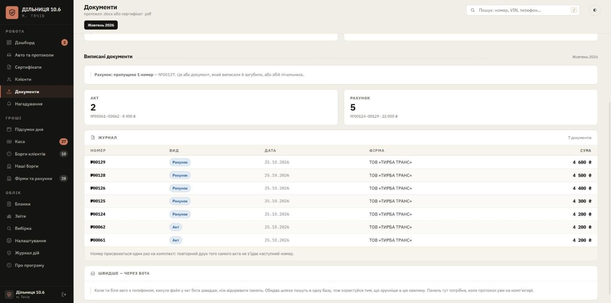
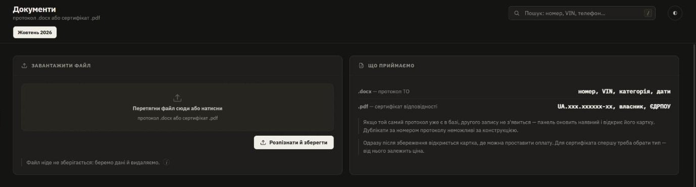

З протоколу .docx
Номер протоколу, держномер, VIN, марка й модель, категорія, дата огляду і дата наступного. Перетягнув файл, і за кілька секунд відкривається картка авто.

Станція проходить техогляд вантажівок. Облік вели в зошиті, місяць зводили вручну, а документи переписували з файлів очима. Тепер документ розпізнається сам, облік зводиться щовечора, а місячний звіт збирається без жодної ручної цифри. Telegram-бот і вебпанель на одній базі.


Протокол техогляду приходить файлом .docx, сертифікат у .pdf. Номер, VIN, марку й дати набирали руками в зошит, помилка в одному символі спливала через місяці. Підсумок місяця зводили калькулятором два дні, тому й не зводили. Кому пора на наступний техогляд і що закінчується на складі, трималось у голові одного чоловіка і зникало разом з його відпусткою.
Біля авто з телефоном кинув файл у Telegram-бот, і дані вже в базі. За комп'ютером зручніше в панелі на 22 сторінки. Правила лежать в одному місці, тому результат однаковий. Повторний файл не створює дубля, а сам файл не зберігається: беремо дані й видаляємо.
Документ із файлу в базу за секунди. Облік зводиться щовечора, розбіжність видно того ж дня, а не в кінці місяця. Місячний звіт збирається сам. Нагадування клієнтам списком, а не в пам'яті. Документи фірмам з наскрізною нумерацією й контролем дірок.
Правило, за яким це все тримаєтьсяЯкщо число десь показується, має бути місце, де видно, з чого воно склалось. Якщо правило десь діє, має бути тест, який ламається, коли правило приберуть. Тому кожен з 1 964 тестів спершу ламали навмисно й дивились, чи він провалиться: тест, який проходить завжди, гірший за відсутній.
Номер протоколу, держномер, VIN, марка й модель, категорія, дата огляду і дата наступного. Перетягнув файл, і за кілька секунд відкривається картка авто.
Номер бланка, VIN, марка, модель, категорія, власник і його код, дата видачі. Повторний файл знаходить наявний запис за номером документа й оновлює його.
Читання файлу й розбір тексту — різні функції. Тому розбір перевіряється на записаній розкладці трьох бланків без самих PDF, і зміна форми не ламає його мовчки.
Однакові на вигляд записи можуть означати різні речі, і від цього залежить підсумок. Тому вид операції окреме поле, а не здогад за назвою. Старі записи рахуються як раніше, тому введення видів не переписало жодного закритого місяця.
У жовтні орган сертифікації змінив форму, і парсер почав мовчки втрачати марку й дату. Тепер розбір відокремлений від читання PDF і перевіряється на записаній розкладці трьох бланків без самих файлів.
Той самий підсумок показують чотири екрани. Усі беруть його з однієї функції, і тест звіряє їх попарно, щоб вони не розійшлись після наступної правки.
Довідник не можна видалити, тільки в архів, інакше старі записи посилатимуться в порожнечу. Закритий день заморожений знімком: якщо його змінили, програма скаже сама. Перед кожною зміною даних робиться копія бази.
Окремий скрипт шукає те, чого тести не бачать: порожні поля, дірки в нумерації документів, дублікати довідників, незаповнені статуси. До кожної знахідки сказано, що з нею робити.
Кинув .docx або .pdf у чат, і дані в базі. Щоденні записи просто з телефона. Вхід у панель кодом у Telegram. Довгий звіт ріжеться по рядках, бо месенджер відхиляє повідомлення понад 4096 символів. Кнопка незворотної дії блокується після першого натискання.
Жодна з проблем станції не вимагала складної математики. Усі вони виникали там, де число доводилось переносити руками. Тому система робить одне: прибирає ручне перенесення скрізь, де воно було.
Python, FastAPI, SQLite у режимі WAL, python-telegram-bot, ReportLab і PyMuPDF для документів. VPS, дві служби systemd, Caddy з автоматичним HTTPS, оновлення однією командою, щоденна копія бази з ротацією. Темна тема не інверсія світлої: кольори описані токенами і перевірені на контраст і три види дальтонізму окремо для кожної теми.
Кожен коміт пояснює, яка проблема його спричинила, а не що змінилось. Через півроку саме це питання виникає першим, а відповіді в коді не лишається.
Знімки зроблено на демонстраційних даних. У кейсі немає ні сум, ні оборотів, ні клієнтів: він про те, як система побудована, а не про те, скільки через неї проходить.